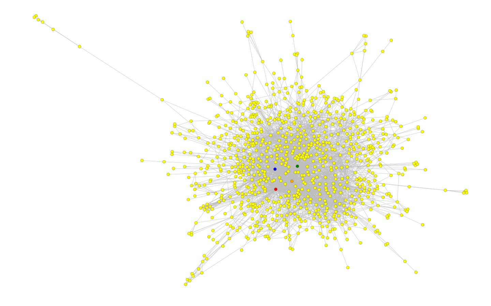

A touchdown in South Park
Check the video below for a quick introduction
If it isnt obvious, or if you're blind, or just have an attention span close to a golden retriver on
speed, we just want to spell it out
for you; South Park! This page is about South Park. And data science of course. More exactly, the
lovechild of South Park and data science.
We will guide you trough the process of how we got deep and dirty with the South Park data. How we
retrived it, how we processed it and how we caressed it.
If you manage to neglect the urge of throwing your computer trough the window, due to the direct
boredom inflicted by methodology, you will be awarded.
The reward is of the juicy kind, that is the data analysis kind. Exciting stuff huh?
Like an bunch of nerdy Dr. Phils we unraveled the relations and attitude of the people in South Park.
Therefore we're now equiped to answer the questions you always wanted to ask
but did'nt have neither the means or the energy too do.
Questions like who has the most influence? Is Hitler the happiest person in South Park? Are there
secret communities?
And most imortantly, what is Cartmans catchphrase?
So if your gotten this far it's time loosen up that index finger and lets start scrolling!
Data
We have gathered all our data, which our analysis is based on, from the South Park Fandom website southpark.wikia.com. All Fandom sites share an API that makes it easy toretrieve pages in JSON format, thus allowing us to get all the data we needed from the character pages. Much to our luck, the South Park Fandom wikia also has the scripts for each episode in a somewhat unified format, making it easy to analyze the scripts themselves. We also found, that it was easy to determine which characters were actually saying each line from the script, allowing us to individually analyze each character. Based on the character pages and the links between them we created a network. You can see a visualisation of that networkd below.
 Change picture later on